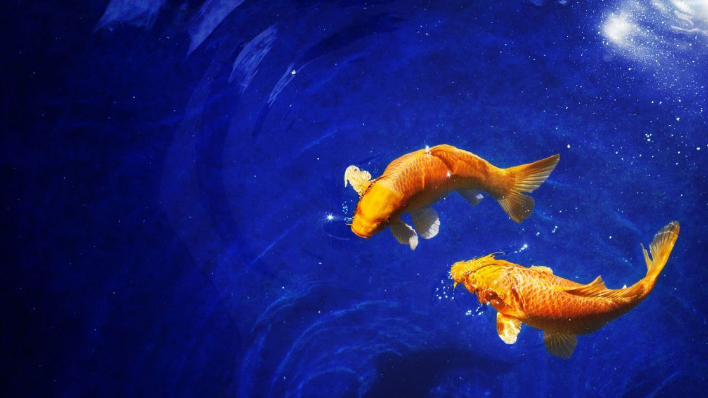

Fish have inhabited the world's oceans for about 500 million years. Fish live in almost all reservoirs of our planet - from endless oceans to small streams. There are about 30,000 of their species, and scientists are constantly discovering new ones unknown to people before.
Fish come in different shapes, colors and sizes. The presence of gills, fins and water as a single habitat - this is what distinguishes this species of animals from all others.
● Fish are cold-blooded vertebrates, so their body temperature depends on the temperature of the water that surrounds them.
● A muddy jumper is a fish that spends most of its time out of water, and can "walk" on land on its own fins. A small amount of water is stored in the gills of jumpers for a long time. They can also breathe through the pores of their moist skin.
● The strangest move on the planet is the seahorse. It swims vertically using its dorsal fin and can move in any direction: backward, forward, up and down. When a grasshopper wants to stop, it twists its tail around the algae, and if it is in danger, it changes coloring, disguising itself.
● Fish use low-pitched sounds to communicate with each other. They moan, growl, wheeze, mumble, hiss, whistle, screech and screech. They crack their bones and grind their teeth. However, fish do not have vocal cords. To produce sound, they use other parts of the body, such as vibrating muscles located opposite the swim bladder.
● Most brands of lipstick contain substances that are part of fish scales. They give the lipstick a unique shine.
● Everyone knows about dust fish. In fact, it is a type of stingray. It can be safely attributed to the largest underwater creatures, because it grows up to 6-8 meters! On the face of the fish, there is a saw-like growth two meters long, stuck with sharp teeth. With its help, the sawfish collects food on the bottom and kills its prey: it crashes into a school of fish and stuns them with the blows of the "saw".
● The largest eyes in a giant squid. Each eye has a diameter of 40 cm and contains more than 1 billion light-sensitive cells. This is about 100 times larger than the human eye! But squids see everything only in black and white light, so it is clearly not worth envying them. And it happens that squids have eyes of different sizes.
● A flying fish jumps out of the water at a speed of 32 km/h! Pushing off the surface of the water with its tail, it flies into the air, and when it falls, it hits the water with its tail again and flies up again. It happens that fish, using air currents, soar to a height of up to six meters and fly at least 400 m above the water.
